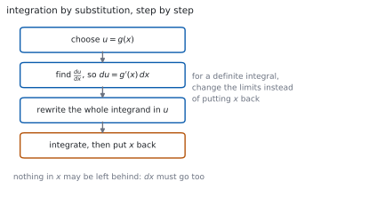
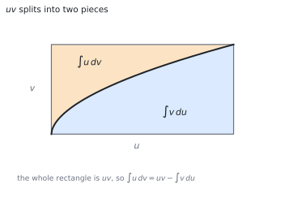

HL 5.16 — Integration by substitution and by parts（置換積分と部分積分）
- \(\displaystyle\int kg'(x)f(g(x))\,\mathrm{d}x\) の形を見て気づくことができる。
- 置換積分（integration by substitution）の手順を書ける。
- 置換が与えられたときに、それを使える。
- 定積分では、上端・下端も変えることができる。
- 部分積分（integration by parts）の公式を使える。
- \(u\) を選ぶ基準を言える。
- 部分積分をくり返す問題を解ける。
The idea
1. Recognising the chain rule backwards（連鎖律を逆に読む）
連鎖律で \(f(g(x))\) を微分すると \(g'(x)f'(g(x))\) でした。逆に読むと
\[ \int k\,g'(x)\,f'(g(x))\,\mathrm{d}x = k\,f(g(x))+C \tag{1}\]
です。「中身の微分が、外にかかっている」形を探します（SL 5.10）。
\(\displaystyle\int 2x\left(x^{2}+1\right)^{5}\mathrm{d}x\) なら、中身 \(x^{2}+1\) の微分 \(2x\) が前にあります。ですから答えは \(\dfrac{\left(x^{2}+1\right)^{6}}{6}+C\) です。
2. Integration by substitution（置換積分）
気づけないときは、文字を置きかえます。
Integration by substitution.

\(\mathrm{d}x\) も置きかえるのが要です。\(u = g(x)\) なら \(\dfrac{\mathrm{d}u}{\mathrm{d}x} = g'(x)\) なので
\[ \mathrm{d}u = g'(x)\,\mathrm{d}x \tag{2}\]
と書きます。\(x\) が \(1\) つでも残っていたら、まだ終わっていません。
3. When a substitution is given（置換が与えられるとき）
シラバスは、こう約束しています。
On examination papers, substitutions will be provided if the integral is not of the form \(\int kg'(x) f (g(x))\mathrm{d}x\).
Link to: integration by substitution (SL5.10).
つまり、自分で思いつかなければならないのは 式 1 の形だけです。それ以外は問題文に「use the substitution \(u = \ldots\)」と書いてあります。
与えられたら、素直にそれを使います。\(x\) を \(u\) で表す式（たとえば \(x = u-1\)）が必要になることもあります。
4. Definite integrals: change the limits（定積分：上端・下端も変える）
定積分では、\(x\) にもどさずに上端・下端を \(u\) の値に変えるほうが速いです（SL 5.11）。
\[ \int_{a}^{b} f(g(x))g'(x)\,\mathrm{d}x = \int_{g(a)}^{g(b)} f(u)\,\mathrm{d}u \tag{3}\]
変えたら、\(x\) にもどす必要はありません。 もどすなら、上端・下端はもとのままにします。どちらか一方です。
5. Integration by parts（部分積分）
Integration by parts.
公式集の 5.16 の欄にあります。
Integration by parts
\[ \int u\,\frac{\mathrm{d}v}{\mathrm{d}x}\,\mathrm{d}x = uv-\int v\,\frac{\mathrm{d}u}{\mathrm{d}x}\,\mathrm{d}x \qquad \text{or} \qquad \int u\,\mathrm{d}v = uv-\int v\,\mathrm{d}u \tag{4}\]

もとは積の微分公式です（第 1 節）。マイナスの符号を落とさないでください。
6. Choosing \(u\)（\(u\) の選び方）
\(u\) に選ぶのは、微分すると簡単になるほうです。\(\dfrac{\mathrm{d}v}{\mathrm{d}x}\) に選ぶのは、積分できるほうです。
Examples: \(\int x\sin x\,\mathrm{d}x\), \(\int \ln x\,\mathrm{d}x\), \(\int \arcsin x\,\mathrm{d}x\)
- \(\displaystyle\int x\sin x\,\mathrm{d}x\) … \(u = x\)（微分すると \(1\)）
- \(\displaystyle\int \ln x\,\mathrm{d}x\) … \(u = \ln x\)、\(\dfrac{\mathrm{d}v}{\mathrm{d}x} = 1\)
- \(\displaystyle\int \arcsin x\,\mathrm{d}x\) … \(u = \arcsin x\)、\(\dfrac{\mathrm{d}v}{\mathrm{d}x} = 1\)
\(\ln x\) や \(\arcsin x\) は、そのままでは積分できません。ですからかならず \(u\) のほうに置きます。
残った \(\dfrac{\mathrm{d}v}{\mathrm{d}x}\) は \(1\) です。\(v = x\) として使います。
7. Repeated integration by parts（くり返す部分積分）
Repeated integration by parts.
Examples: \(\int x^{2}e^{x}\mathrm{d}x\) and \(\int e^{x}\sin x\,\mathrm{d}x\).
\(x^{2}\) のように、\(1\) 回では \(1\) にならないときはくり返します。\(x^{2} \to 2x \to 2\) と \(2\) 回です。
\(e^{x}\sin x\) は、\(2\) 回使うともとの積分がもどってきます。そこで、もとの積分を \(I\) と置いて方程式として解きます（第 4 節）。
TI-Nspire CX II の積分テンプレートに入れれば、置換も部分積分も自動です。\(+C\) は付きません。
答えの見た目が自分の答えとちがうことがあります。差が定数かどうかを見るか、微分してもどるかを見れば、どちらも正しいと分かります。
答案には、式を書いてください。 置換なら \(u\) と \(\mathrm{d}u\) の行、部分積分なら \(u\) と \(\dfrac{\mathrm{d}v}{\mathrm{d}x}\) を決めた行を見せます。
Paper 1 では使えません。 このページの例題と演習は、すべて手で解けるようにしてあります。
Why it works
なぜ、置換積分が成り立つのか
連鎖律を逆に読んでいるだけです。\(F' = f\) とすると
\[ \frac{\mathrm{d}}{\mathrm{d}x}F(g(x)) = f(g(x))\,g'(x) \]
です。両辺を \(x\) で積分すると
\[ \int f(g(x))\,g'(x)\,\mathrm{d}x = F(g(x))+C \]
になります。\(u = g(x)\) と書けば、右辺は \(F(u)+C\)、つまり \(\displaystyle\int f(u)\,\mathrm{d}u\) です。
\(\mathrm{d}u = g'(x)\mathrm{d}x\) は、この対応を短く書いたものです。
なぜ、部分積分が成り立つのか
積の微分公式から出ます（SL 5.6）。
\[ \frac{\mathrm{d}}{\mathrm{d}x}(uv) = u\,\frac{\mathrm{d}v}{\mathrm{d}x}+v\,\frac{\mathrm{d}u}{\mathrm{d}x} \]
両辺を \(x\) で積分します。左辺は \(uv\) です。
\[ uv = \int u\,\frac{\mathrm{d}v}{\mathrm{d}x}\,\mathrm{d}x+\int v\,\frac{\mathrm{d}u}{\mathrm{d}x}\,\mathrm{d}x \]
移項すれば 式 4 です。マイナスは、移項から出ています。
図 2 の面積図でも同じことが見えます。長方形 \(uv\) が、曲線で \(2\) つに分かれています。
なぜ、\(u\) は「微分すると簡単になるほう」なのか
式 4 の右辺には、\(\displaystyle\int v\dfrac{\mathrm{d}u}{\mathrm{d}x}\mathrm{d}x\) が残ります。
この残りが、もとより易しくなっていなければ意味がありません。 \(u\) を微分するので、微分して簡単になるものを \(u\) にします。
\(x\sin x\) で \(u = \sin x\) と選ぶと、残りは \(\displaystyle\int \dfrac{x^{2}}{2}\cos x\,\mathrm{d}x\) となり、もとより難しくなります。選び方が大事なのは、このためです。
なぜ、もとの積分がもどってくることがあるのか
\(e^{x}\sin x\) では、微分しても積分しても形が変わりません。\(2\) 回使うと
\[ I = e^{x}\sin x-e^{x}\cos x-I \]
のように、右辺に \(I\) が現れます。
これは\(I\) についての \(1\) 次方程式です。\(2I = e^{x}\sin x-e^{x}\cos x\) から \(I\) が求まります。
\(+C\) は最後に付けます。 方程式を解いてから書き足してください。
Worked examples
問題文は英語です。意味が理解できなかったら、問題文の下の「日本語訳」を開いてください。解説は日本語です。
例題も演習も、すべて電卓なしで解けます。 Paper 1 のつもりで解いてください。
例題 1 Find \(\displaystyle\int 2x\left(x^{2}+1\right)^{5}\mathrm{d}x\).
日本語訳
\(\displaystyle\int 2x\left(x^{2}+1\right)^{5}\mathrm{d}x\) を求めなさい。
中身は \(x^{2}+1\)、その微分は \(2x\) です。ちょうど前に付いています（式 1）。
\(u = x^{2}+1\) と置くと \(\mathrm{d}u = 2x\,\mathrm{d}x\) なので
\[ \int 2x\left(x^{2}+1\right)^{5}\mathrm{d}x = \int u^{5}\,\mathrm{d}u = \frac{u^{6}}{6}+C = \frac{\left(x^{2}+1\right)^{6}}{6}+C \]
検算。 微分してもどします。 \(\dfrac{6\left(x^{2}+1\right)^{5}}{6}\times 2x = 2x\left(x^{2}+1\right)^{5}\) ✓
検算（\(\mathrm{d}x\)）。 \(2x\,\mathrm{d}x\) がまるごと \(\mathrm{d}u\) になりました ✓ \(x\) は残っていません。
Let \(u = x^{2}+1\), so \(\mathrm{d}u = 2x\,\mathrm{d}x\).
\[\int 2x\left(x^{2}+1\right)^{5}\mathrm{d}x = \int u^{5}\,\mathrm{d}u = \frac{u^{6}}{6}+C = \frac{\left(x^{2}+1\right)^{6}}{6}+C\]
例題 2 Use the substitution \(u = x+1\) to find \(\displaystyle\int x\sqrt{x+1}\,\mathrm{d}x\).
日本語訳
置換 \(u = x+1\) を使って \(\displaystyle\int x\sqrt{x+1}\,\mathrm{d}x\) を求めなさい。
\(u = x+1\) なら \(\mathrm{d}u = \mathrm{d}x\) です。\(x\) も \(u\) で書きます。 \(x = u-1\) です。
\[ \int x\sqrt{x+1}\,\mathrm{d}x = \int (u-1)\sqrt{u}\,\mathrm{d}u = \int\left(u^{3/2}-u^{1/2}\right)\mathrm{d}u \]
\[ = \frac{2}{5}u^{5/2}-\frac{2}{3}u^{3/2}+C = \frac{2}{5}(x+1)^{5/2}-\frac{2}{3}(x+1)^{3/2}+C \]
検算。 微分してもどします。 \((x+1)^{3/2}-(x+1)^{1/2} = (x+1)^{1/2}\left[(x+1)-1\right] = x\sqrt{x+1}\) ✓
検算（\(x\) が残っていないか）。 置きかえの途中で \(x = u-1\) を使いました ✓ \(u\) だけの式になっています。
Let \(u = x+1\), so \(\mathrm{d}u = \mathrm{d}x\) and \(x = u-1\).
\[\int x\sqrt{x+1}\,\mathrm{d}x = \int\left(u^{3/2}-u^{1/2}\right)\mathrm{d}u = \frac{2}{5}u^{5/2}-\frac{2}{3}u^{3/2}+C\]
\[= \frac{2}{5}(x+1)^{5/2}-\frac{2}{3}(x+1)^{3/2}+C\]
例題 3 Find \(\displaystyle\int x\sin x\,\mathrm{d}x\).
日本語訳
\(\displaystyle\int x\sin x\,\mathrm{d}x\) を求めなさい。
\(u = x\)、\(\dfrac{\mathrm{d}v}{\mathrm{d}x} = \sin x\) と選びます（第 6 節）。
\[ u = x, \quad \frac{\mathrm{d}u}{\mathrm{d}x} = 1, \qquad \frac{\mathrm{d}v}{\mathrm{d}x} = \sin x, \quad v = -\cos x \]
式 4 に入れます。
\[ \int x\sin x\,\mathrm{d}x = x(-\cos x)-\int (-\cos x)(1)\,\mathrm{d}x \]
\[ = -x\cos x+\int \cos x\,\mathrm{d}x = -x\cos x+\sin x+C \]
検算。 微分してもどします。 \(-\cos x+x\sin x+\cos x = x\sin x\) ✓
検算（選び方）。 \(u = \sin x\) にすると \(\displaystyle\int \dfrac{x^{2}}{2}\cos x\,\mathrm{d}x\) が残ります ✓ もとより難しくなります。
Let \(u = x\) and \(\dfrac{\mathrm{d}v}{\mathrm{d}x} = \sin x\), so \(\dfrac{\mathrm{d}u}{\mathrm{d}x} = 1\) and \(v = -\cos x\).
\[\int x\sin x\,\mathrm{d}x = -x\cos x+\int \cos x\,\mathrm{d}x = -x\cos x+\sin x+C\]
例題 4 Find \(\displaystyle\int x^{2}e^{x}\,\mathrm{d}x\).
日本語訳
\(\displaystyle\int x^{2}e^{x}\,\mathrm{d}x\) を求めなさい。
\(1\) 回目。 \(u = x^{2}\)、\(\dfrac{\mathrm{d}v}{\mathrm{d}x} = e^{x}\) です。
\[ \int x^{2}e^{x}\,\mathrm{d}x = x^{2}e^{x}-\int 2xe^{x}\,\mathrm{d}x \]
\(2\) 回目。 残った積分に、もう一度使います。\(u = 2x\)、\(\dfrac{\mathrm{d}v}{\mathrm{d}x} = e^{x}\) です。
\[ \int 2xe^{x}\,\mathrm{d}x = 2xe^{x}-\int 2e^{x}\,\mathrm{d}x = 2xe^{x}-2e^{x} \]
合わせます。
\[ \int x^{2}e^{x}\,\mathrm{d}x = x^{2}e^{x}-2xe^{x}+2e^{x}+C = e^{x}\left(x^{2}-2x+2\right)+C \]
検算。 微分してもどします。 \(e^{x}\left(x^{2}-2x+2\right)+e^{x}(2x-2) = e^{x}x^{2}\) ✓
検算（回数）。 \(x^{2} \to 2x \to 2\) で、\(2\) 回で \(x\) が消えました ✓ \(x^{3}\) なら \(3\) 回です。
\[\int x^{2}e^{x}\,\mathrm{d}x = x^{2}e^{x}-\int 2xe^{x}\,\mathrm{d}x\]
\[\int 2xe^{x}\,\mathrm{d}x = 2xe^{x}-2e^{x}\]
\[\int x^{2}e^{x}\,\mathrm{d}x = e^{x}\left(x^{2}-2x+2\right)+C\]
試験ではこう書く
Integration by parts is applied twice, because the polynomial factor \(x^{2}\) needs two differentiations before it disappears.
First application: take \(u = x^{2}\) and \(\dfrac{\mathrm{d}v}{\mathrm{d}x} = e^{x}\), so that \(\dfrac{\mathrm{d}u}{\mathrm{d}x} = 2x\) and \(v = e^{x}\). Then
\[\int x^{2}e^{x}\,\mathrm{d}x = x^{2}e^{x}-\int 2xe^{x}\,\mathrm{d}x\]
The remaining integral is simpler, since the power of \(x\) has dropped from \(2\) to \(1\).
Second application, on that integral: take \(u = 2x\) and \(\dfrac{\mathrm{d}v}{\mathrm{d}x} = e^{x}\), so \(\dfrac{\mathrm{d}u}{\mathrm{d}x} = 2\) and \(v = e^{x}\). Then
\[\int 2xe^{x}\,\mathrm{d}x = 2xe^{x}-\int 2e^{x}\,\mathrm{d}x = 2xe^{x}-2e^{x}\]
Combining, and writing the constant only once at the end,
\[\int x^{2}e^{x}\,\mathrm{d}x = x^{2}e^{x}-2xe^{x}+2e^{x}+C = e^{x}\left(x^{2}-2x+2\right)+C\]
Differentiating the answer returns the integrand, which confirms it. Note that the same choice of \(u\) must be kept at each stage: switching to \(u = e^{x}\) at the second step would undo the first and return to the original integral.
Common errors
\(u\) だけ置きかえて \(\mathrm{d}x\) をそのままにすると、式が合いません（式 2）。
\(\mathrm{d}u = g'(x)\mathrm{d}x\) を、かならず書いてください。
置換したあとの式に \(x\) が残っていたら、まだ終わりではありません（第 2 節）。
\(x = u-1\) のように、\(x\) を \(u\) で表す必要があることもあります。
どちらか一方です（第 4 節）。
上端・下端を \(u\) の値にしたら、そのまま \(u\) で計算します。\(x\) にもどすなら、上端・下端はもとのままです。
微分して簡単になるほうを \(u\) にします（第 3 節）。
残った積分がもとより難しくなったら、選び方が逆です。やり直してください。
どちらも、そのままでは積分できません（第 6 節）。
かならず \(u\) のほうです。残りの \(\dfrac{\mathrm{d}v}{\mathrm{d}x}\) は \(1\) になります。
Exercises
各問題に、折りたたみが \(3\) つ付いています。日本語訳、解答例（答案用紙に書くべきこと。英語です）、解説（なぜそうなるか。日本語です）。
まず自分で解いて、次に解答例と見くらべてください。解説は、合わなかったときだけ開けば十分です。
1 Find \(\displaystyle\int 3x^{2}\left(x^{3}+2\right)^{4}\mathrm{d}x\).
日本語訳
\(\displaystyle\int 3x^{2}\left(x^{3}+2\right)^{4}\mathrm{d}x\) を求めなさい。
Let \(u = x^{3}+2\), so \(\mathrm{d}u = 3x^{2}\,\mathrm{d}x\).
\[\int 3x^{2}\left(x^{3}+2\right)^{4}\mathrm{d}x = \int u^{4}\,\mathrm{d}u = \frac{u^{5}}{5}+C = \frac{\left(x^{3}+2\right)^{5}}{5}+C\]
中身の微分が、そのまま前に付いています（式 1）。置換を書かずに答えてもかまいません。
検算。 微分すると \(\dfrac{5\left(x^{3}+2\right)^{4}}{5}\times 3x^{2}\) ✓
検算（係数）。 \(3x^{2}\) がちょうど \(\mathrm{d}u\) ✓ 余分な数が出ません。
2 Find \(\displaystyle\int \sin^{3}x\cos x\,\mathrm{d}x\).
日本語訳
\(\displaystyle\int \sin^{3}x\cos x\,\mathrm{d}x\) を求めなさい。
Let \(u = \sin x\), so \(\mathrm{d}u = \cos x\,\mathrm{d}x\).
\[\int \sin^{3}x\cos x\,\mathrm{d}x = \int u^{3}\,\mathrm{d}u = \frac{u^{4}}{4}+C = \frac{\sin^{4}x}{4}+C\]
\(\cos x\) が \(\sin x\) の微分です。式 1 の形です。
検算。 微分すると \(\dfrac{4\sin^{3}x}{4}\times\cos x\) ✓
検算（\(x = \dfrac{\pi}{2}\)）。 答えは \(\dfrac{1}{4}\)、被積分関数は \(0\) ✓ そこで傾きが \(0\) です。
3 Find \(\displaystyle\int x e^{x^{2}}\,\mathrm{d}x\).
日本語訳
\(\displaystyle\int x e^{x^{2}}\,\mathrm{d}x\) を求めなさい。
Let \(u = x^{2}\), so \(\mathrm{d}u = 2x\,\mathrm{d}x\) and \(x\,\mathrm{d}x = \dfrac{1}{2}\mathrm{d}u\).
\[\int x e^{x^{2}}\,\mathrm{d}x = \frac{1}{2}\int e^{u}\,\mathrm{d}u = \frac{1}{2}e^{u}+C = \frac{1}{2}e^{x^{2}}+C\]
\(\mathrm{d}u = 2x\,\mathrm{d}x\) ですが、式にあるのは \(x\,\mathrm{d}x\) です。\(\dfrac{1}{2}\) が出ます。
検算。 微分すると \(\dfrac{1}{2}e^{x^{2}}\times 2x = xe^{x^{2}}\) ✓
検算（\(\dfrac{1}{2}\) の出どころ）。 \(x\,\mathrm{d}x = \dfrac{1}{2}\mathrm{d}u\) ✓ ここから来ています。
4 Find \(\displaystyle\int \frac{x}{x^{2}+1}\,\mathrm{d}x\).
日本語訳
\(\displaystyle\int \frac{x}{x^{2}+1}\,\mathrm{d}x\) を求めなさい。
Let \(u = x^{2}+1\), so \(\mathrm{d}u = 2x\,\mathrm{d}x\).
\[\int \frac{x}{x^{2}+1}\,\mathrm{d}x = \frac{1}{2}\int \frac{1}{u}\,\mathrm{d}u = \frac{1}{2}\ln\lvert u \rvert+C = \frac{1}{2}\ln\left(x^{2}+1\right)+C\]
分子が分母の微分の \(\dfrac{1}{2}\) 倍です。ですから \(\ln\) になります。
\(x^{2}+1 > 0\) なので、絶対値は外してかまいません。
検算。 微分すると \(\dfrac{1}{2}\cdot\dfrac{2x}{x^{2}+1} = \dfrac{x}{x^{2}+1}\) ✓
検算（分子が \(1\) なら）。 \(\arctan x\) になります ✓ 分子で見分けます。
5 Find \(\displaystyle\int \ln x\,\mathrm{d}x\).
日本語訳
\(\displaystyle\int \ln x\,\mathrm{d}x\) を求めなさい。
Let \(u = \ln x\) and \(\dfrac{\mathrm{d}v}{\mathrm{d}x} = 1\), so \(\dfrac{\mathrm{d}u}{\mathrm{d}x} = \dfrac{1}{x}\) and \(v = x\).
\[\int \ln x\,\mathrm{d}x = x\ln x-\int x\cdot\frac{1}{x}\,\mathrm{d}x = x\ln x-x+C\]
積に見えなくても、\(1\) をかけたと思えば部分積分が使えます（第 6 節）。
\(\ln x\) は積分できないので、\(u\) のほうです。
検算。 微分すると \(\ln x+x\cdot\dfrac{1}{x}-1 = \ln x\) ✓
検算（\(x = 1\)）。 答えは \(-1+C\)、被積分関数は \(0\) ✓ そこで傾きが \(0\) です。
6 Find \(\displaystyle\int x\cos x\,\mathrm{d}x\).
日本語訳
\(\displaystyle\int x\cos x\,\mathrm{d}x\) を求めなさい。
Let \(u = x\) and \(\dfrac{\mathrm{d}v}{\mathrm{d}x} = \cos x\), so \(\dfrac{\mathrm{d}u}{\mathrm{d}x} = 1\) and \(v = \sin x\).
\[\int x\cos x\,\mathrm{d}x = x\sin x-\int \sin x\,\mathrm{d}x = x\sin x+\cos x+C\]
\(-\displaystyle\int \sin x\,\mathrm{d}x = +\cos x\) です。符号が \(2\) 回変わります。
検算。 微分すると \(\sin x+x\cos x-\sin x = x\cos x\) ✓
検算（\(\sin\) のとき）。 \(\displaystyle\int x\sin x\,\mathrm{d}x = -x\cos x+\sin x+C\) ✓ 形は似ていますが符号がちがいます。
7 Find \(\displaystyle\int_{0}^{1} x e^{x}\,\mathrm{d}x\).
日本語訳
\(\displaystyle\int_{0}^{1} x e^{x}\,\mathrm{d}x\) を求めなさい。
Let \(u = x\) and \(\dfrac{\mathrm{d}v}{\mathrm{d}x} = e^{x}\), so \(v = e^{x}\).
\[\int_{0}^{1} x e^{x}\,\mathrm{d}x = \left[xe^{x}\right]_{0}^{1}-\int_{0}^{1} e^{x}\,\mathrm{d}x = e-\left[e^{x}\right]_{0}^{1} = e-(e-1) = 1\]
定積分でも、角かっこを付ければ同じです。\(uv\) の部分にも上端・下端が付きます。
検算（不定積分から）。 \(e^{x}(x-1)\) を \(0\) から \(1\) で \(0-(-1) = 1\) ✓
検算（大きさ）。 被積分関数は \(0\) から \(e\) まで増えるので、面積が \(1\) 前後なのは自然 ✓
8 Find \(\displaystyle\int e^{x}\sin x\,\mathrm{d}x\).
日本語訳
\(\displaystyle\int e^{x}\sin x\,\mathrm{d}x\) を求めなさい。
Let \(I = \displaystyle\int e^{x}\sin x\,\mathrm{d}x\). Taking \(u = \sin x\), \(\dfrac{\mathrm{d}v}{\mathrm{d}x} = e^{x}\),
\[I = e^{x}\sin x-\int e^{x}\cos x\,\mathrm{d}x\]
Applying parts again to the new integral, with \(u = \cos x\),
\[\int e^{x}\cos x\,\mathrm{d}x = e^{x}\cos x+\int e^{x}\sin x\,\mathrm{d}x = e^{x}\cos x+I\]
\[I = e^{x}\sin x-e^{x}\cos x-I, \qquad I = \frac{e^{x}\left(\sin x-\cos x\right)}{2}+C\]
もとの積分がもどってきます（第 4 節）。そこで \(I\) についての方程式として解きます。
\(2\) 回とも同じ側を \(u\) にするのが大切です。\(1\) 回目に \(\sin\)、\(2\) 回目に \(e^{x}\) を \(u\) にすると、もとにもどるだけで進みません。
検算。 微分すると \(\dfrac{e^{x}(\sin x-\cos x)+e^{x}(\cos x+\sin x)}{2} = e^{x}\sin x\) ✓
検算（\(+C\)）。 方程式を解いたあとに付けました ✓ 途中で付けると \(2\) 重になります。
試験ではこう書く
Write \(I = \displaystyle\int e^{x}\sin x\,\mathrm{d}x\). Neither factor becomes simpler on differentiation, so the aim is to recover \(I\) and solve for it.
Apply integration by parts with \(u = \sin x\) and \(\dfrac{\mathrm{d}v}{\mathrm{d}x} = e^{x}\), so \(\dfrac{\mathrm{d}u}{\mathrm{d}x} = \cos x\) and \(v = e^{x}\):
\[I = e^{x}\sin x-\int e^{x}\cos x\,\mathrm{d}x\]
Apply parts a second time to \(\displaystyle\int e^{x}\cos x\,\mathrm{d}x\), keeping the trigonometric factor as \(u\) so that the process moves forward rather than reversing. With \(u = \cos x\) and \(v = e^{x}\),
\[\int e^{x}\cos x\,\mathrm{d}x = e^{x}\cos x-\int e^{x}(-\sin x)\,\mathrm{d}x = e^{x}\cos x+I\]
Substituting back,
\[I = e^{x}\sin x-\left(e^{x}\cos x+I\right) = e^{x}\sin x-e^{x}\cos x-I\]
This is a linear equation in \(I\). Adding \(I\) to both sides gives \(2I = e^{x}\left(\sin x-\cos x\right)\), so
\[I = \frac{e^{x}\left(\sin x-\cos x\right)}{2}+C\]
The constant of integration is added only at this final stage, after the equation has been solved.
9 Explain how to choose \(u\) and \(\dfrac{\mathrm{d}v}{\mathrm{d}x}\) when using integration by parts.
日本語訳
部分積分を使うときの \(u\) と \(\dfrac{\mathrm{d}v}{\mathrm{d}x}\) の選び方を説明しなさい。
The formula replaces one integral by \(uv\) minus another integral involving \(v\) and \(\dfrac{\mathrm{d}u}{\mathrm{d}x}\), so the new integral must be easier than the original.
Choose as \(u\) the factor that becomes simpler when differentiated, such as a power of \(x\), and as \(\dfrac{\mathrm{d}v}{\mathrm{d}x}\) a factor that can be integrated, such as \(e^{x}\) or \(\sin x\).
Functions such as \(\ln x\) and \(\arcsin x\) cannot be integrated directly, so they must be taken as \(u\), with \(\dfrac{\mathrm{d}v}{\mathrm{d}x} = 1\).
残る積分が易しくなるか、が判断の基準です（第 3 節）。
\(x^{n}\) は微分すると次数が下がるので \(u\) 向きです。\(e^{x}\)、\(\sin x\)、\(\cos x\) は積分しても形が変わらないので \(\dfrac{\mathrm{d}v}{\mathrm{d}x}\) 向きです。
検算（悪い選び方）。 \(x\sin x\) で \(u = \sin x\) とすると \(\displaystyle\int\dfrac{x^{2}}{2}\cos x\,\mathrm{d}x\) ✓ 次数が上がっています。
検算（\(\ln x\)）。 積分できないので \(u\) にするしかありません ✓
試験ではこう書く
The formula \(\displaystyle\int u\frac{\mathrm{d}v}{\mathrm{d}x}\mathrm{d}x = uv-\int v\frac{\mathrm{d}u}{\mathrm{d}x}\mathrm{d}x\) does not evaluate an integral by itself: it trades the original integral for a different one. The choice of \(u\) is therefore made so that the new integral is easier than the old.
Since \(u\) is differentiated and \(\dfrac{\mathrm{d}v}{\mathrm{d}x}\) is integrated, two conditions guide the choice. First, \(u\) should become simpler on differentiation. A power of \(x\) is ideal, because each differentiation lowers the degree by one and after enough steps it disappears. Second, \(\dfrac{\mathrm{d}v}{\mathrm{d}x}\) must be something that can actually be integrated, such as \(e^{x}\), \(\sin x\) or \(\cos x\), whose integrals are no harder than themselves.
Some functions force the choice. Neither \(\ln x\) nor \(\arcsin x\) has an elementary antiderivative that is known in advance, so neither can serve as \(\dfrac{\mathrm{d}v}{\mathrm{d}x}\). They must be taken as \(u\), and the remaining factor is then \(1\), giving \(v = x\).
A practical test is to look at the integral that remains. If it is simpler than the original, the choice was right; if it is more complicated, swapping the two factors usually fixes it.
10 A student writes \(\displaystyle\int u\,\mathrm{d}v = uv+\int v\,\mathrm{d}u\). Identify the error and show, using \(\displaystyle\int x e^{x}\,\mathrm{d}x\), what goes wrong.
日本語訳
ある生徒が \(\displaystyle\int u\,\mathrm{d}v = uv+\int v\,\mathrm{d}u\) と書きました。まちがいを指摘し、\(\displaystyle\int x e^{x}\,\mathrm{d}x\) を使って何がいけないのかを示しなさい。
The correct formula has a minus sign: \(\displaystyle\int u\,\mathrm{d}v = uv-\int v\,\mathrm{d}u\).
With \(u = x\) and \(\mathrm{d}v = e^{x}\mathrm{d}x\), the student’s version gives \(xe^{x}+e^{x}+C\).
Differentiating this gives \(e^{x}+xe^{x}+e^{x} = xe^{x}+2e^{x}\), which is not the integrand. The correct answer is \(xe^{x}-e^{x}+C\).
符号は移項から出ています（第 2 節）。プラスにすると、積の微分公式にもどりません。
検算（正しい答え）。 \(xe^{x}-e^{x}\) を微分すると \(e^{x}+xe^{x}-e^{x} = xe^{x}\) ✓
検算（差）。 \(2\) つの答えの差は \(2e^{x}\) で、定数ではありません ✓ ですから「\(+C\) のちがい」では説明できません。
試験ではこう書く
The formula for integration by parts comes from the product rule,
\[\frac{\mathrm{d}}{\mathrm{d}x}(uv) = u\frac{\mathrm{d}v}{\mathrm{d}x}+v\frac{\mathrm{d}u}{\mathrm{d}x}\]
Integrating both sides gives \(uv = \displaystyle\int u\,\mathrm{d}v+\int v\,\mathrm{d}u\), and rearranging to make \(\displaystyle\int u\,\mathrm{d}v\) the subject moves the second integral across, producing a minus sign:
\[\int u\,\mathrm{d}v = uv-\int v\,\mathrm{d}u\]
The student’s version has a plus sign and is therefore not equivalent to the product rule.
Applying it to \(\displaystyle\int xe^{x}\mathrm{d}x\) with \(u = x\) and \(\mathrm{d}v = e^{x}\mathrm{d}x\), so \(\mathrm{d}u = \mathrm{d}x\) and \(v = e^{x}\), the incorrect formula gives \(xe^{x}+\displaystyle\int e^{x}\mathrm{d}x = xe^{x}+e^{x}+C\).
Differentiating this result gives \(e^{x}+xe^{x}+e^{x} = xe^{x}+2e^{x}\), which is not the integrand \(xe^{x}\). The correct formula gives \(xe^{x}-\displaystyle\int e^{x}\mathrm{d}x = xe^{x}-e^{x}+C\), whose derivative is \(e^{x}+xe^{x}-e^{x} = xe^{x}\) as required. The two answers differ by \(2e^{x}\), which is not a constant, so this is a genuine error and not merely a different choice of constant.